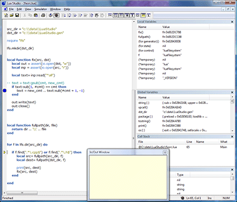

|
Download Screenshot Forum 26-May-2008 Michal Kowalski |
Lua StudioLua Studio is a simple IDE for scripting language Lua, including syntax coloring editor and an integrated debugger. InstallationCopy binaries to any folder, for instance “c:\Program Files\LuaStudio”. Click on the LuaStudio.exe to launch IDE. If you don't have Visual Studio 2008 installed, you may need to download Visual C++ 2008 Redistributable Package from Microsoft's web site (C run-time libs, and more; it's a small package, below 2 MB in size). Running Lua ProgramWhen LuaStudio is up and running you can either start typing your new program, or load an existing one. When it's ready, click “Parse Document” icon or press F7. If there are syntactic errors status bar will show error message, and red marker will show up in the line containing the error. Fix it and press F7 again. Now your debugger session is open. Debugging Lua ProgramEach time F7 is pressed to parse current document, new Lua environment is initialized, and your program is loaded. It can be run by pressing F5, or traced step by step with Step Into (F11), Step Over (F10), or Step Out (Ctrl+F11). To toggle a breakpoint, press F9. When Lua program is running, its execution can be interrupted by pressing Ctrl+Break. To inspect currently used variables, one can use local and global variables windows. Call stack shows active function calls. To see program's output, please use In/Out Window (Alt+5).  |
Build Lua StudioTo build Lua Studio you will need VS 2008 IDE and Lua Studio sources available at the LuaForge CVS repository. Source files include IDE sources, Lua 5.1.3, Lua File System lib (lfs), Scintilla (text editor), and Scintilla MFC wrapper. After opening solution file, simply build either Release or Debug configuration, and look for built executable inside Release or Debug folder respectively. LimitationsThis project is in alpha state (not feature complete). As such it is usable, but it has several limitations. In particular:
Technical NotesLuaStudio is written in C++ using MFC. The reason why MFC has been used, is simply due to the fact that I ressurected my old 6502 simulator program, instead of writing everything from scratch. Lua binaries and lfs (Lua file system) have been both compiled as DLLs. In theory that allows using any Lua library, as long as it is compiled in VC 2008, with the same compiler settings. |
{kind=link}